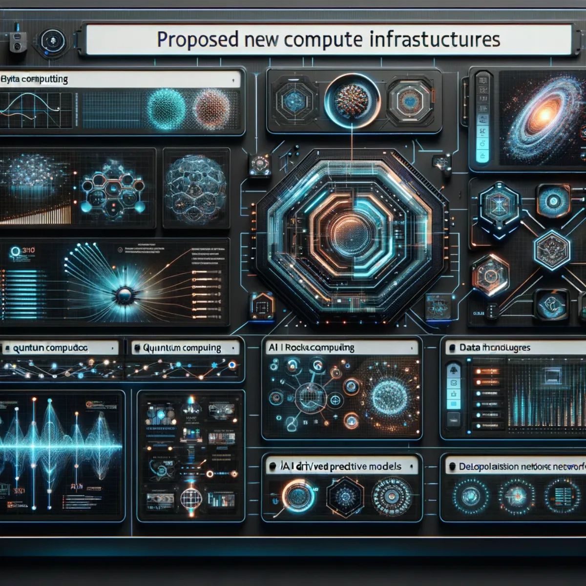
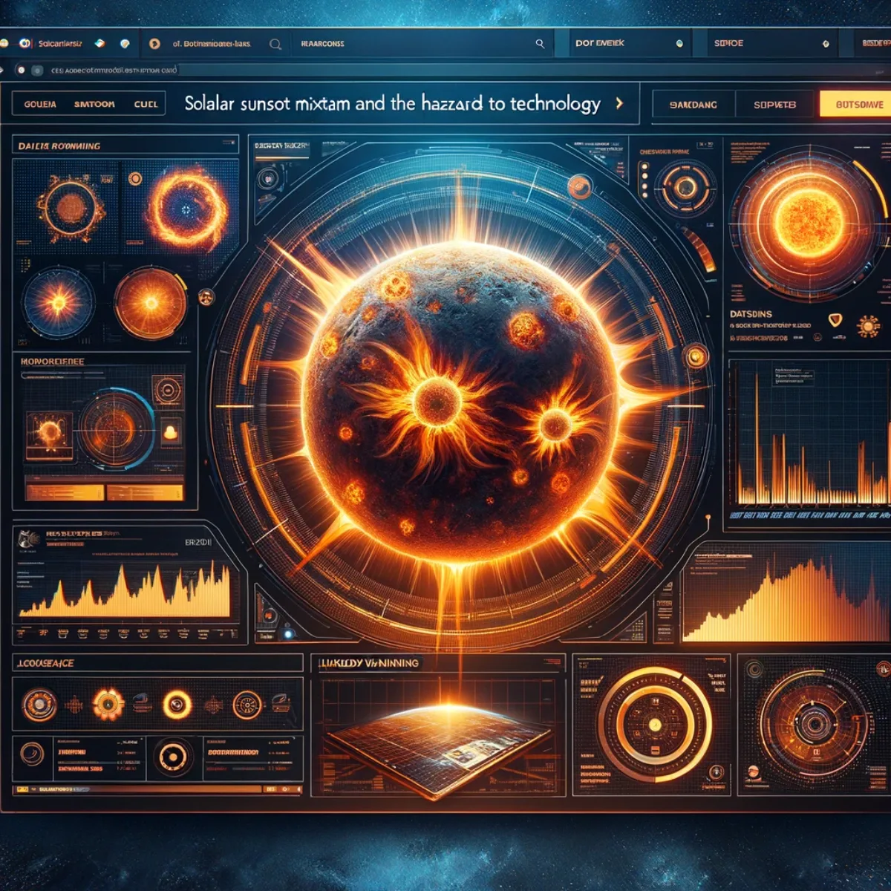

More from Aura
Cloud Compute
Where the compute comes from: the infrastructure, providers and territory that power an Aura of Intelligence.
Harnessing Global Tech Titans: Your Gateway to Established Cloud Networks
Existing Major Providers
Introducing the present pinnacle of cloud computing, Existing Major Providers offer a central hub for navigating the vast network of established tech giants. With real-time analytics at your fingertips, you'll have the power to make data-driven decisions, backed by the reliability and trust of industry leaders. Embrace stability and innovation in one sophisticated interface.
Innovation at Your Fingertips: Invest in Harnessing the Cloud with VueNow Cloud Particles
VueNow Cloud Particles
Step into the future with VueNow Cloud Particles. The MyCloudParticles website outlines various investment opportunities to participate in the growth of data centre infrastructure. Interested parties can engage by buying or creating a data centre, leasing property or land for data centre use, investing in capital assets for data centres, or purchasing individual Particles, either in full or in part. This flexible approach caters to different budgets and allows investors to minimise risk while potentially benefiting from the sector's growth. Contact us for more.
Revolutionising Microchip Innovation: Pioneering the Future of Foundries
New Chip Foundries
In an era where technology is rapidly evolving, New Chip Foundries emerge as the epicentre of cutting-edge microchip production. Tens of billions of dollars are being spent every year on state-of-the-art facilities that are not just manufacturing hubs; they are the birthplaces of innovation that drive the technological prowess of tomorrow. Let's harness the latest in semiconductor technology to create microchips that are smaller, faster, and more efficient than ever before.

Blueprinting Tomorrow: Architecting the Future of Compute
Proposed New Compute Infrastructures
Step into the blueprint of tomorrow with our awareness of new compute infrastructures. Envision a world powered by the synergy of quantum processing, AI sophistication, and the unbound potential of decentralised networks. Some of the proposed infrastructures represent the pinnacle of innovation, promising unparalleled computational power and predictive capabilities, revealing the endless possibilities of a future where every computation is a step towards a breakthrough.
Harnessing the Cloud: Decoding Data Dynamics Globally
Recent Global Cloud Data Centre and Compute Statistics
Dive into the vast ocean of digital transformation with these recent global cloud data centre and compute statistics. Unlock insights into the pulsating heart of cloud services, where each byte and bit shapes the future. Explore graphs and charts that bring to life the growth trends, usage patterns, and computational demands powering today's hyper-connected world. Witness the evolution of technological advancement and global connectivity.
Intelligent Essence: Customising Compute for the Enlightened
Compute Requirements of Individuals with an Aura of Intelligence
Embark on a journey of personalised computation with our Aura of Intelligence interface, where your digital essence meets the vast capabilities of AI. Tailor your tech to transcend the ordinary, with real-time data processing and AI integration that adapts to the rhythm of your life. Elevate your experience with custom agents and profiles, designed for the individual who commands their digital destiny, ensuring your computational needs are not just met: they're anticipated.

Eclipsing Disruption: Navigating Tech's Solar Challenges
Solar Sunspot Maximum and the Hazard it Presents to Technology
As the sun enters a period of heightened activity, the impending Solar Sunspot Maximum casts both light and shadow on our technological advancements. Understanding the electromagnetic turbulence that accompanies such celestial events is crucial. Our foresight and preparedness can turn a potential hazard into an opportunity to harden and evolve our systems, ensuring that the same solar energy that fuels our star also ignites our resilience in technology.
Calculated Courage: Turning Risks into Rewards
Risk Analysis and Deciding on a Valuable and Exciting Outcome
Risk Analysis isn't about avoiding danger: it's about mapping the terrain of the unknown and charting a course to treasure. By meticulously evaluating potential pitfalls and probabilities, we can take bold steps towards outcomes that are not only valuable but also exhilarating. Join us as we transform uncertainty into action and fear into the excitement of what's possible.
Horizons Ahead: Charting the Uncharted
Where to go From Here?
At the crossroads of now and next, we stand poised to make decisions that will echo through the history of our endeavours. Where to go from here is not just a question: it's a call to intellectual adventure. We harness collective wisdom, ignite collaborative innovation, and take a step into the future. Together, let's set our sights on new horizons and turn the page to the next chapter of our journey in technology and beyond.
Keep exploring